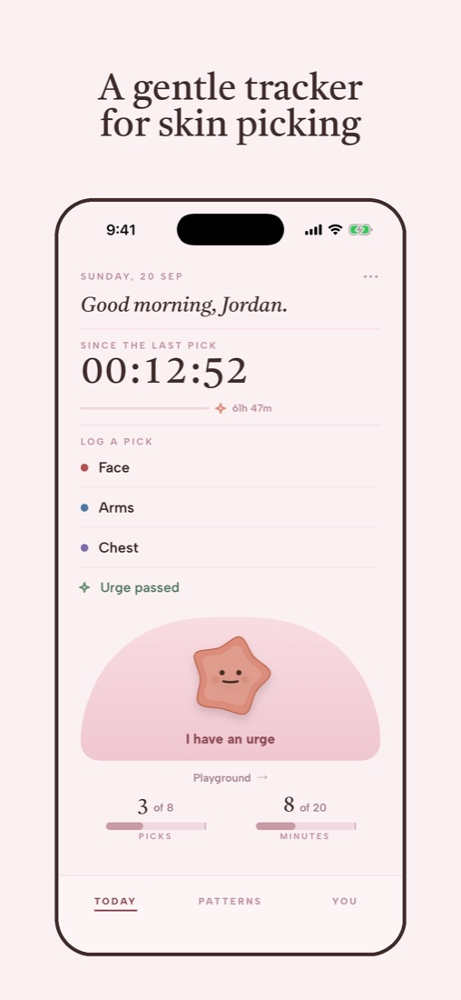
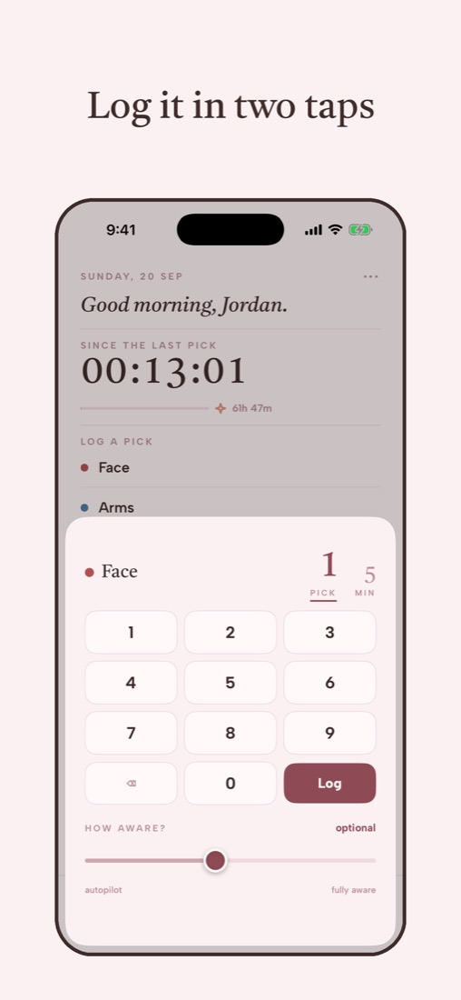
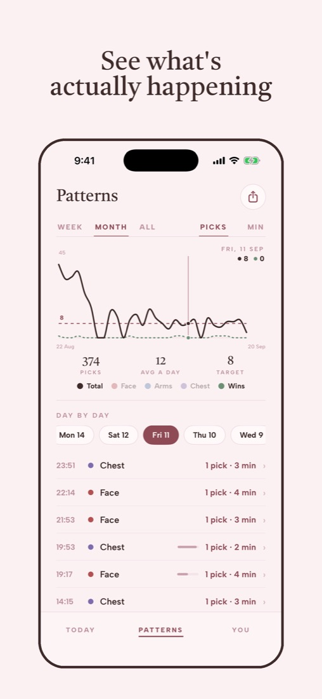
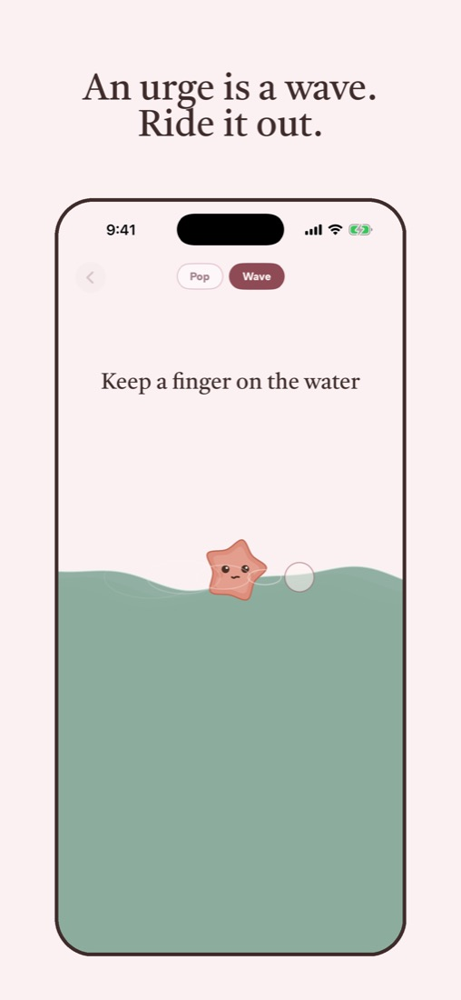
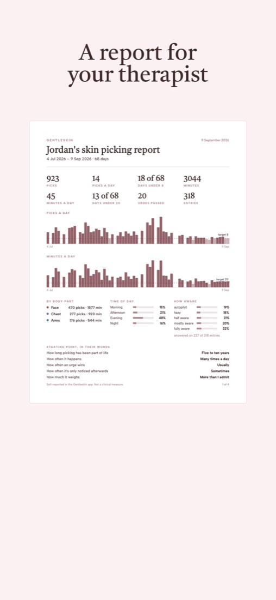
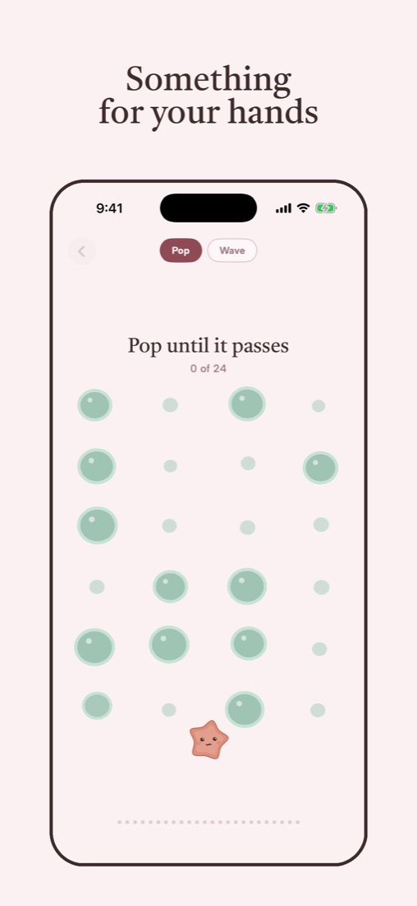

A gentle tracker
for skin picking
Log a pick in two taps, ride out an urge, and see what's actually happening, without streaks or shame. For dermatillomania and other body-focused repetitive behaviors.
Download on the App StoreiPhone · 7-day free trial






What it does
Log in two taps
Tap where, type how many. Or how long, if counting isn't how it works for you. Add your own spots, and an optional slider for how aware you were.
When an urge hits
Urges rise, crest and pass. Ride a thirty-second wave, or keep your hands busy popping kelp pods. Getting through one counts as a win.
See what's happening
One hand-drawn chart: week, month, everything. Your daily target is a quiet line, not an alarm.
A report for your therapist
One tap makes a printable PDF: totals, the chart, body parts, time of day, how aware you were.
No streaks, no shame
The app keeps your longest stretch between picks as a quiet record. Nothing breaks and nothing scolds.
Guides
Plain answers to the questions people ask about skin picking.
Questions
How much does Gentleskin cost?
Gentleskin starts with a 7-day free trial, then it's $29.99 a year or $5.99 a month in the US (prices vary by region). You get a reminder two days before the trial ends, and the urge screen stays open whether you subscribe or not.
Is it only for skin picking?
It's built for skin picking (dermatillomania, excoriation disorder): face, scalp, lips, cuticles, scabs, or any spot you add. You can count picks, time them, or both.
Is there an Android version?
Not yet. Gentleskin is on iPhone for now.
Is Gentleskin a treatment?
No. It's a self-tracking tool, not a medical device. Many people use it alongside therapy; the PDF report is made for that.